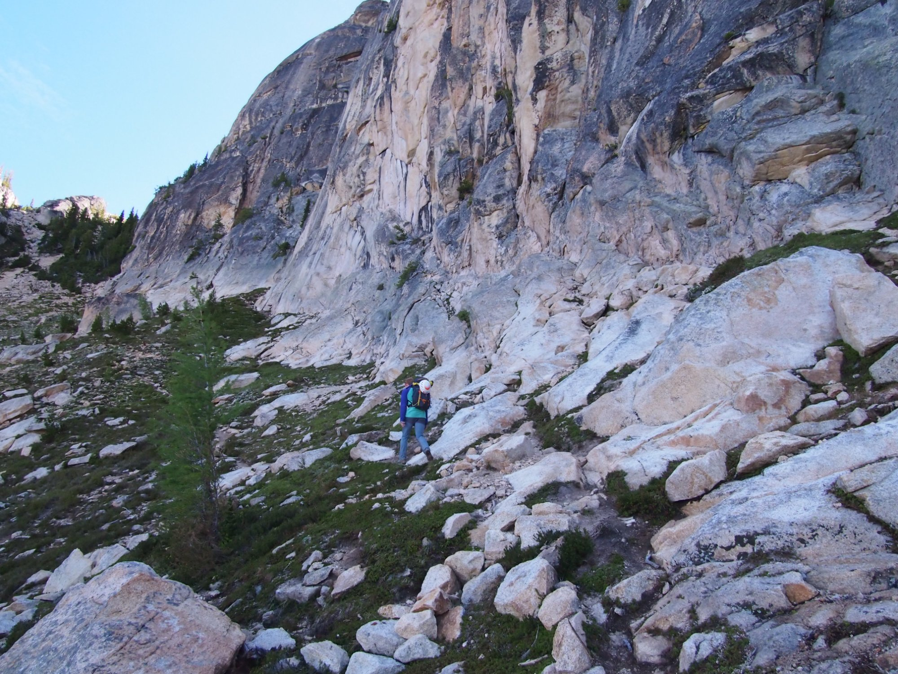
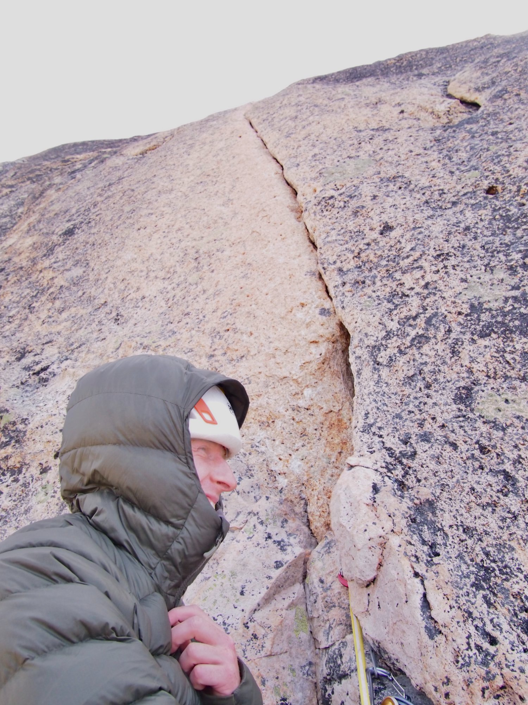
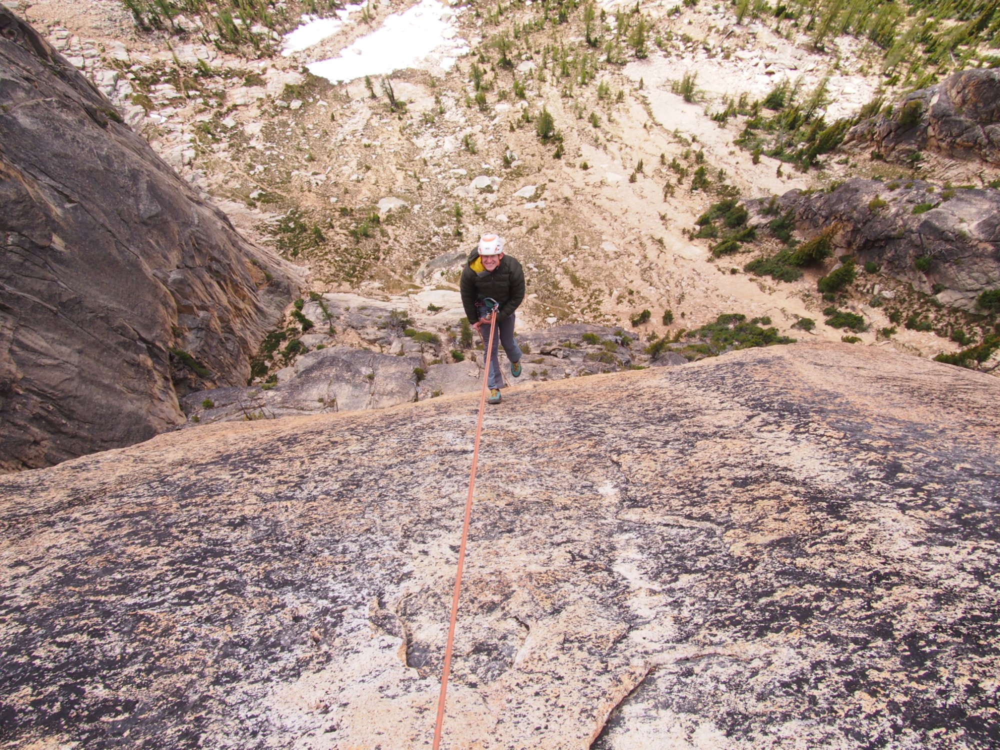

Climbing the North Early Winters Spire
07/09/2026
Always itching for alpine adventure, my friend Aiden and I sought it out last Thursday in the North Cascades. We planned to get after two routes on the Liberty Bell group’s North Early Winter Spire, the Northwest Corner and West face. These are the two most popular routes on the formation, and for good reason. They are both comprised of splitter granite cracks in a gorgeous alpine setting, with simple route finding and a bolted rappel descent.
After an early-ish start and some delicious Trader Joes instant coffee, Aiden and I trounced up the hour long approach from Blue Lakes Trailhead to the Liberty Bell group. From here, the trail to the base of both our routes was fairly obvious.

Both the West Face and Northwest Corner share their first pitch, which makes for some possible traffic jams. We started up the West Face route at about 10am, and made it to the base of the beautiful splitter tips crack by 11.

I sadly was not strong enough to pull the moves, so had to aid about 15 feet of the crack. This resulted in an exciting fall when I stood on a fixed nut and ripped it out of the wall! After this crack, it’s a few exciting 10C moves before it eases off and cruises to the top. The rappel stations were bolted and in good locations, so we were able to knock out the raps and be back at the base of the next route within an hour.
The Northwest Corner route included the same first pitch, and then two 5.9 pitches, one of which (the zig zag flakes) was quite fun, but the wide corner after it felt much more thrutchy than advertised. We rappelled again, and hiked out to the car as the sun set, wondering where the time went and happy with the day.
